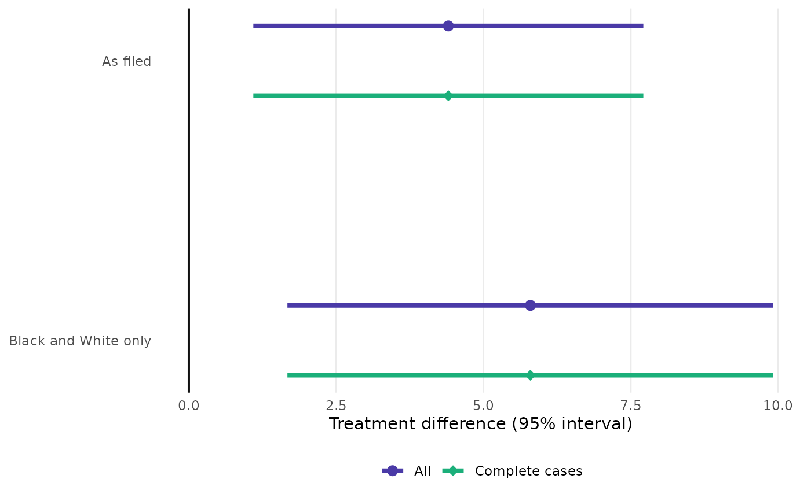

Estimate and 95% interval for the filed analysis and the named rows of each census, one panel per endpoint-metric row, the filed row first. When several results objects are given (a trial alone and pooled with an earlier trial, say), the objects are drawn side by side within each row in different colours.
Arguments
- ...
One or more
stress_censusorstress_resultobjects (or lists of them, as inplot_swarm()). Several objects are compared side by side; name the arguments to label them.- rows
Character vector of census row labels to show. The default is every counted row with
role = "supplementary".- xlab
Axis label.
Examples
spec <- stress_spec(mmrm::fev_data, "FEV1", "USUBJID", "AVISIT", "ARMCD", "PBO",
covariates = ~ RACE + SEX + FEV1_BL)
d <- mmrm::fev_data
cen <- stress_census(spec, stress_covariance(spec, "cs"),
stress_data(spec, list("Black and White only" = d[d$RACE != "Asian", ],
"Female only" = d[d$SEX == "Female", ])))
if (requireNamespace("ggplot2", quietly = TRUE)) {
plot_forest(cen)
plot_forest("All" = cen, "Complete cases" = cen, rows = "Black and White only")
}
